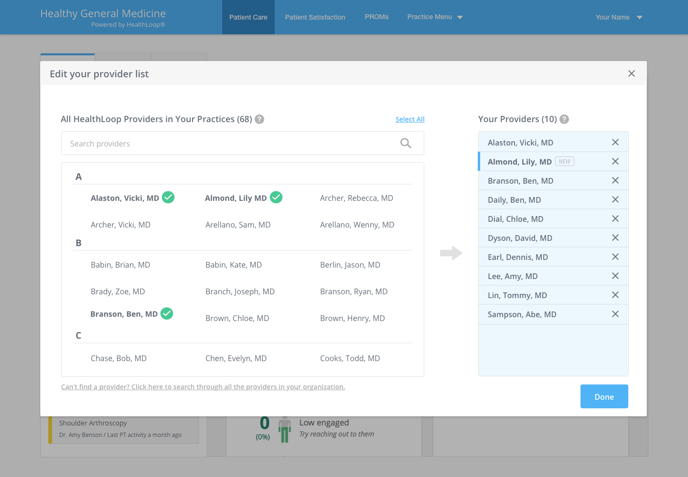
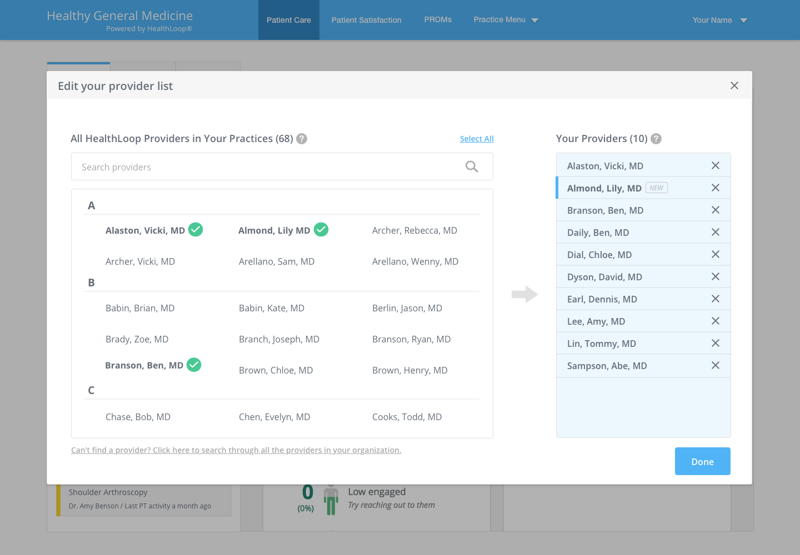

Staff Inbox Redesign
Optimize the process for staff to clean up inbox

Optimize the process for staff to clean up inbox
HealthLoop helps doctors stay connected with patients through their recovery journey. As hospital staff, they work with multiple doctors (a.k.a. providers) and interact with their patients regarding symptoms, comments, and questions. Major costumers include hospitals such as UCSF and Cedar Sinai.
This goal is to improve staff’s work efficiency by helping them complete their job of responding to patients and shifting responsibility faster. The challenge is to accommodate different size of healthcare organizations since our business is transferring from small and midsize business (SMB) to enterprise solutions.
Design Lead
Stakeholder Interview, Information Architecture, Task Flow, Wireframe, Prototype, User Testing
HealthLoop
As the project owner, I’m responsible for the UI redesign, UX enhancement, and usability testing. I worked with a cross-functional team, including product manager, customer support, and engineers. Deliverables included wireframes, task flow, user testing report, and hi-fi UI design based on internal critiques and user studies.
Throughout the design process, I used the existing staff persona to guide decisions about features, navigation, and interaction. It's also a powerful way to communicate insights about the behavior and pain points of the users.
From initial investigation with internal stakeholders, grouping lists of tasks in the inbox by patient symptom severity does not meet the goal when staff want to find patients associate with a doctor.

Staff apply the filter to view patients by doctor. However, they forget they’ve filtered the list and tend to ignore the filter status reminder at the bottom of the inbox. Therefore, no one takes care of certain patients because their information is hidden.


As the filter performs the function of displaying and temperately hiding doctors. I went further to exam the interdependency of the app, which is the configuration of handling the doctor list. And I found it's not easy for staff to adjust the doctors they work with because this feature is hidden under the navigation system.

Doctor list is not scalable for health systems that have more complex organization hierarchy. Staff users also need a better way to deal with large amount of data.


To deepen the knowledge about staff users' behavior and gather feedback about the new changes, I established the research plan, defined tasks, recruited participants, and conducted remote user testing sessions with 6 staff users who currently use our app to validate the ideas.
It’s helpful when doctors have different protocols or preferences.
I don’t need to go to the practice setting. It’s a good idea of having the two options of grouping things.
I know physicians I am looking at and covering with.
Incorporate the use case that staff users work for several doctors with different instructions or protocols. Therefore, users get jobs done faster without switching gears.


Get a clear sense of how many doctors on the list and have full control by seeing the completed to-do list coming from patients. No more hidden doctor and no more missing information.
Provide a quick entry point to make the important configuration accessible and easy to find. Based on the user testing, 100% of the users clicked on the new quick entry point in the inbox to access the doctor list, and no one tried to look around the navigation menu.
 

Improve browsing and enable scoped search so that staff in a large health system can switch between department and organization level.
After validating the solution with users and polished the detailed design for the desktop version, I began to work on mobile design and adjusted the features based on the usage frequency and information architecture.

In the navigation drawer, the entry point of “Editing you provider list” was promoted one layer up from the setting so it gets better visibility.

This is designed to support staff users who are anxious about making mistakes in the transition process. By separating major tasks and providing clear indications, it reduces users' congnitive load.